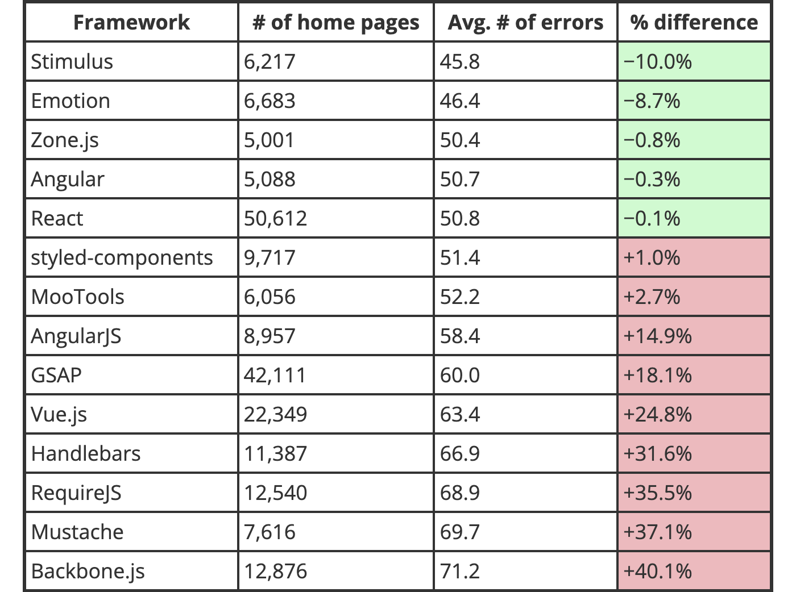
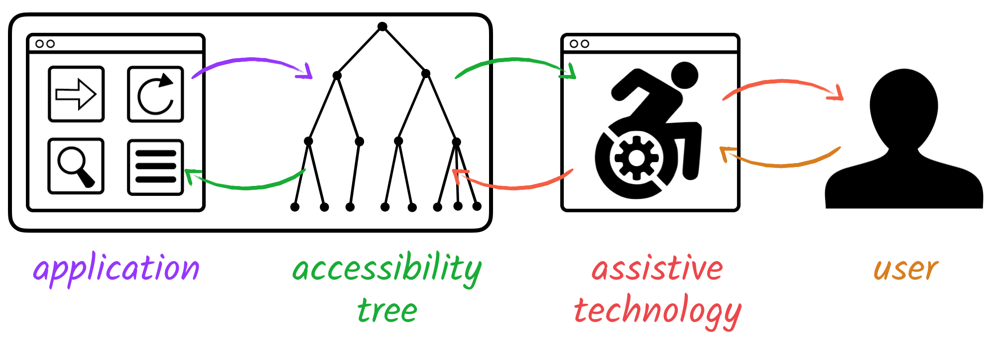
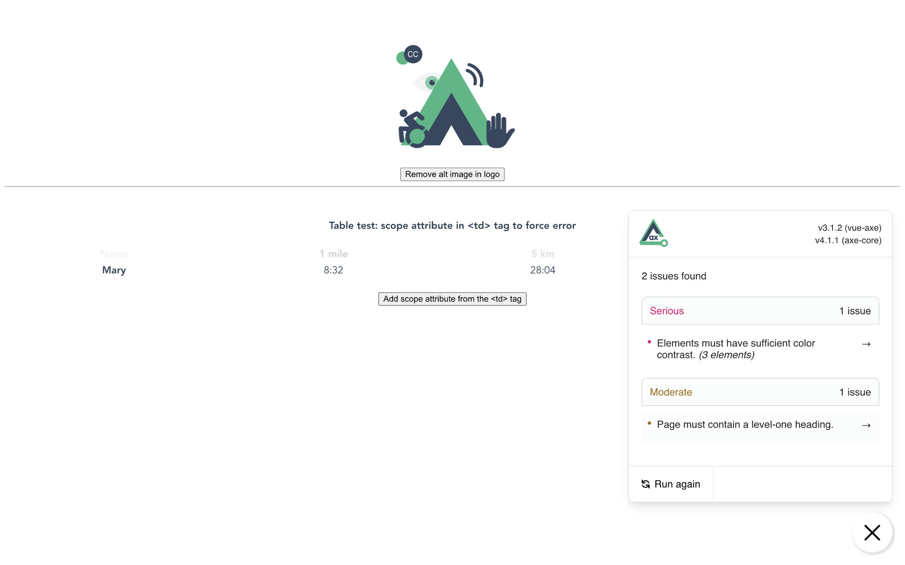

To make accessible components in Vue.js

Translation Articles
Introduction
First, let me introduce myself.
My name is yamanoku. I started working as a web designer and then began to get more seriously involved with web technologies as a markup engineer, developing a growing interest in the field of accessibility.
Currently, I work for a business company, and I would like to improve the user experience by utilizing web standards technology.
At this edition of Vue Fes Japan Online 2022, we will be presenting on Vue.js and the theme of accessibility, but first, I will explain why we are presenting on this theme.
That's because I thought that development in Vue.js might not have much opportunity to consider accessibility.
A simple explanation of accessibility is the concept of making information accessible to everyone, and putting that idea into practice on the Web is called Web Accessibility.
In recent front-end development, being able to focus on this area has become an area where we can value and differentiate our sites and products from others.
A section on accessibility has been added from the Vue3 documentation. The content is designed to help you learn the basics of accessibility and some of the actual use cases.
It's a good thing these documents have been added since they were not merged in the form of drafts before Vue 2.
However, a survey by the U.S. nonprofit WebAIM found that sites using Vue.js lack accessibility.

This does not mean that using a particular library or framework is not accessible. But it is a fact that accessibility has been below average[1] since the year before last.
I am not sure how many Japanese sites are included in the surveyed sites, but as a Vue.js developer, I do not think this situation should be left unchecked.
In this session, we will present three themes that will make it easier to address accessibility in future development with Vue.js.
The target audience is "people who are just starting to learn about web accessibility" and "people who want to improve accessibility with Vue.js".
The code presented in this case is based on Vue 3. Please note that.
About Wrong Accessibility Support
Accessibility can be such that what you do for good without much understanding has no impact. On the contrary, it can get worse.
Let's learn about the most common mistakes in order to eliminate bad accessibility development.

Many people have heard about WAI-ARIA since they became aware of accessibility.
WAI-ARIA is a technical specification that supplements assistive technologies such as screen readers with accessible information that cannot be expressed in HTML alone.

Information about accessibility is reflected in the accessibility tree by parsing the DOM tree and CSS rendering from the browser.
Then, information is delivered to users with assistive technology from accessibility APIs for each OS.
WAI-ARIA is a form of semantics that can be recognized in this accessibility tree.
Some people start using WAI-ARIA as a way to increase accessibility. I was one of them.
However, there are some things to keep in mind when using WAI-ARIA.
That means "NO ARIA is better than BAD ARIA"[2].
In other words, It means that it's still better accessible not to use WAI-ARIA than to use it incorrectly.
In this section, I will introduce the use of WAI-ARIA in ways that are easy to make mistakes or forget during development.
aria-label
First is the aria-label, This is used when you have textual information that you want to convey to assistive technology.
An example of this is a button with only an icon.
In this pattern, there is no text within the button, so it is recognized as a "menu, button".
<button type="button" aria-label="menu">
<span class="fa-solid fa-bars"></span>
</button>
So what happens in this pattern?
<a href="https://vuejs.org/" aria-label="Vue">
<img src="link-text.png" alt="Vue.js official site">
</a>
If there is image text inside the link, this will override the alt information and read "Link, Image, Vue".
This also overrides the label element, which reads "Input form, edit text".
<label for="text-field">Name</label>
<input type="text" aria-label="Input form" id="text-field">
In this way, aria-label sometimes overwrites the textual information that it originally wanted to convey.
In order to provide equivalent information to all people, rather than giving different information only to users of assistive technology, please provide the information in visible text as much as possible.
Incidentally, since WAI-ARIA 1.2, aria-label defines roles that must not be named, such as generic roles for div elements and span elements. Please check the specification for details.
aria-hidden
Next, about aria-hidden.
aria-hidden removes the element and all its children from the accessibility tree.
Examples include decorative elements that do not need to be communicated to assistive technology, duplicate content, and hiding other content when a modal is displayed.
<main class="content" aria-hidden="true">
The content itself is hidden.
</main>
<div
id="dialog"
class="dialog-container"
aria-labelledby="dialog-title"
aria-describedby="dialog-description"
aria-modal="true"
role="dialog">
<div>
<h1 id="dialog-title">title</h1>
<p id="dialog-description">description</p>
</div>
</div>
aria-hidden is very powerful, so be sure you know the scope of its effect before you use it.
For example, if you use aria-hidden on a parent element that covers a modal, everything will be hidden, including the modal.
All that assistive technology support is wasted.
<div aria-hidden="true"><!-- Parent is hidden by aria-hidden -->
<main class="content">
Content is hidden.
</main>
<div
id="dialog"
class="dialog-container"
aria-modal="true"
role="dialog">
The modal itself is also hidden.
</div>
</div>
Also, be careful not to use it on the element to be focused or the element that contains it.
Because you can focused, but you can't recognize what that element is.
<a href="https://vuefes.jp/2022/" aria-hidden="true">
Vue Fes Japan Online 2022
</a>
Consider using the CSS display: none or hidden attributes if you want to completely remove the element rather than hide it temporarily.
aria-live
Next, about aria-live.
It's called a live region, and it's used to communicate any dynamic changes in the page to assistive technology.
Examples include changes in form input, screen transitions in SPA, warning notifications, and carousel changes.
<script setup lang="ts">
import { ref, computed } from 'vue'
const count = ref<number>(0);
const personNumber = computed(() => {
if (count.value < 0) return count.value = 0;
return count.value;
});
</script>
<template>
<button type="button" @click="count++">Increment</button>
<button type="button" @click="count--">Decrement</button>
<div role="status" aria-live="polite">
﹛{ personNumber }} persons
</div>
</template>
For normal notifications, it is recommended to use aria-live="polite", which reads out the operation after it is completed.
The aria-live="assertive" will interrupt other operations to notify you when there are dynamic changes.
This is fine as an alert, but should not be used with the wrong value, as constant notification of information during an automatically switching carousel or form entry would severely damage the user experience.
aria-current
Finally, about aria-current.
This is used to convey the current position.
Examples include pagination, navigation, and breadcrumb links.
As a stand-alone WAI-ARIA, you'll probably use it less frequently than the ones we've discussed so far.
However, it is used in libraries that are often seen by those who develop with Vue.js.
It is the Vue Router.
Sometimes used in <router-link> and sometimes in <nuxt-link>, the standard link component of Nuxt.js.
<!-- When /about is accessed, it is drawn with the a element with aria-current="page" -->
<router-link to="/about">About page</router-link>
<!-- In the case of Nuxt.js -->
<nuxt-link to="/about">About page</nuxt-link>
If the link matches the current URL path, the link will have aria-current="page".
This is useful if the link text itself matches the page title.
But if you put this element at random, the information about what is in the current position becomes cumbersome.
<div>
<a href="/about" aria-current="page">About page</a>
<!-- ... -->
<!-- ... -->
<!-- ... -->
<a href="/about" aria-current="page">About page</a>
<!-- ... -->
<!-- ... -->
<a href="/about" aria-current="page">About page</a>
</div>
When markup, be aware of the grouping of links and the areas where they will be placed.
By the way, Vue Router has an API to control the aria-current part[3].
There are multiple values that can indicate step, date, and current time information. Let's check to see if the aria-current value is what you intended.
In this way, some elements of WAI-ARIA cannot be used as they are, and their unintentional use may affect the application.
You can easily create something that isn't accessible by misusing it.
On the other hand, using HTML roughly guarantees the same behavior in browser standards.
If you're not sure about WAI-ARIA and are about to use it, you might want to stop and consider whether you can express it in HTML alone without using them.
MDN Web Docs, a collection of web technology information for developers, lists accessibility concerns on the HTML elements page.
It's a useful site to understand if you're using HTML the way you usually write.
If you want to learn HTML in more detail, we also recommend "HTML Kaitai Shinsho".
It is the closest Japanese-language book to the HTML specification at this time, so you can use it as a reference for implementation and review.
Make versatile, accessible components
The previous case study illustrates the need to use WAI-ARIA with caution.
However, it is difficult to develop while confirming each and every one of them.
Therefore, by including rules in the component design, it is easier to develop with less inconsistency in recognition in team development.
Next, we will introduce some hints on how to create accessible components that can be used versatile.
Reinforce with TypeScript
TypeScript support has been improved since Vue3. Some of you may have taken this opportunity to start using it.
If you use TypeScript, this is a useful way to reinforce the creation of accessible components.
<script setup lang="ts">
import { computed, defineProps } from 'vue';
type Props = {
// Type annotate the level of the heading element with union type
headlineLevel: 1 | 2 | 3 | 4 | 5 | 6;
headlineText: string;
}
const props = defineProps<Props>();
// Use props heading level to represent like h1
const headlineTag = computed(() => `h${props.headlineLevel}`);
const headingText = computed(() => props.headlineText);
</script>
<template>
<component :is="headlineTag">
﹛{ headingText }}
</component>
</template>
This pattern implements a generic use of the heading component.
The <component> element can contain any element by the is attribute, which is controlled by the value of props.
In addition to this, it is recommended to define props that are necessary for new users of the component, such as props for alternative text in case of image components, props for lang attribute in case of multi-language support, and so on.
<script setup lang="ts">
import { defineProps } from 'vue';
type Props = {
altText: string;
lang: 'ja' | 'en' | 'fr';
}
defineProps<Props>();
</script>
You can also use type checking tools such as vue-tsc to check attribute values in <template>.
<!-- The type check tells me that aria-current cannot use empty characters -->
<a :href="url" :aria-current="isCurrentPage: ? 'page' : ''">
Link
</a>
Watch for wrong values here.
Visually Hidden
Visually Hidden is a method that cannot be seen visually but can be seen with assistive technology.
It is sometimes defined in UI frameworks such as Bootstrap.
It is similar to the aria-label component mentioned above, but this type of component can be used universally.
<script setup lang="ts">
import { computed, defineProps } from 'vue';
type Props = {
isFocusable?: boolean;
tag?: 'div' | 'span';
};
const props = defineProps<Props>();
const focusedClass = computed(() => props.isFocusable ? 'visually-hidden-focusable' : 'visually-hidden');
const tag = computed(() => props.tag ? props.tag : 'span');
</script>
<template>
<component :is="tag" :class="focusedClass">
<slot />
</component>
</template>
It can be used to hide the Button component when there is no text, or the label portion of a form part.
It can also be made visible when the focus is controlled by CSS.
<style scoped>
.visually-hidden,
.visually-hidden-focusable:not(:focus):not(:focus-within) {
position: fixed;
top: 0px;
left: 0px;
width: 4px;
height: 4px;
opacity: 0;
overflow: hidden;
border: none;
margin: 0;
padding: 0;
display: block;
visibility: visible;
}
</style>
This can be used as a "skip link", a means for assistive technology users to skip to content.

It does not usually appear on the screen, but allows you to skip directly to the content when there is a lot of header content.
Fragments
Vue3 introduces the concept of Fragments.
Until Vue2, the root element in a <template> had to be a single one. This led to incorrect markup for some components.
<template>
<!-- Assuming a component like table-columns -->
<!-- in Vue2, you have to root divs, etc. -->
<!-- but the following markup is not applicable -->
<div>
<tr><td>Item</td></tr>
<tr><td>Contents</td></tr>
</div>
</template>
Fragments allow for a single route and help ensure the correctness of markup in components.
<template>
<!-- Since Vue3, you can now write the following -->
<tr><td>Item</td></tr>
<tr><td>Contents</td></tr>
</template>
However, that the root element of the component will no longer automatically be assigned attributes from the parent component.
<SubmitButton disabled />
<template inheritAttrs="false">
<!-- Attributes are not inherited by the div element itself at the root -->
<div>
<!-- By the button element you specify -->
<button type="submit" v-bind="$attrs">
Submit
</button>
</div>
</template>
In that case, set inheritAttrs to false and add v-bind="$attrs" to the element that will receive the attribute.
Accessibility Testing and Checking
Have we created an accessible component? That's very nice!
But there is something more important than creating a component: making sure it works properly.
So, let's do some testing and checking to make sure that the component we have created is really OK.
Linter
First, check with a static analysis tool.
If you have eslint installed, I recommend using eslint-plugin-vuejs-accessibility.
This is an eslint plugin that will point out if there is code in your Vue.js code that compromises accessibility.
Depending on the site or application you are building, there may be rules that are unnecessary. It is a good idea to consider what rules to enable before implementing.
If you want to be more markup oriented and check the accuracy of your HTML, it is also useful to introduce markuplint.

There is a Vue.js parser that can be used in conjunction with markuplint to check within the vue component.
However, markuplint is not able to evaluate the content of attributes that are dynamic bindings, so they will be ignored.
<!-- The alt contains nothing, but is not evaluated by markuplint. -->
<img src="image.png" :alt="null">
In this case, you may want to use the aforementioned TypeScript type definitions and props to receive the correct content from the parent, or check markuplint when static HTML or based on the HTML of a snapshot test.
Integration test
Have you deployed Jest for front-end testing? If so, you are in luck.
Let's use testing-library to write a coupled test of the behavior for an assistive technology user.
import { render, screen } from '@testing-library/vue';
import keyboardOnlyUserEvent from 'keyboard-testing-library/dist/require';
import IncrementButton from './IncrementButton.vue';
test('Click events are functioning with keyboard operation', async () => {
render(IncrementButton);
const button = screen.getByRole('button', {name: 'increment'});
await keyboardOnlyUserEvent.navigateToAndPressEnter(button);
await keyboardOnlyUserEvent.navigateToAndPressEnter(button);
expect(screen.getByRole('region', {name: 'Times clicked: 2')).toBeTruthy();
});
This test case uses getByRole to get the role of an element and check the internal text.
It also uses the testing-library extension that does keyboard testing to check if it works correctly.
You can also tab and click in userEvent, but this is a more concise and understandable form.
If you can use the correct markup and WAI-ARIA, you can write your test code in a way that respects the semantics.
In addition, you can use jest-axe to check for overall accessibility violations.
import { render } from '@testing-library/vue';
import { axe, toHaveNoViolations } from 'jest-axe';
import App from './App.vue';
expect.extend(toHaveNoViolations);
it('Rendered results do not violate accessibility', async () => {
const { container } = render(<App/>);
const results = await axe(container);
expect(results).toHaveNoViolations();
});
This is a Jest matcher that uses the accessibility verification library engine called axe.
Like eslint, the rules can be adjusted on your own, so you can scrutinize them as needed.
Check Browser and Assistive Technology
If you have verified accessibility correctness with the test code, the next step is to check it with actual browsers and assistive technologies as well.
vue-axe is a plugin that allows you to check accessibility in the browser.

This plugin is useful for squashing problems while doing local development.
Keep an eye on areas you may not have noticed in the code, including contrast ratios.
Check keyboard operation
Now that you've verified accessibility with a test code, it's time to check it out with an actual browser or assistive technology.
For form elements and links, check if the tab key can be used for transitions and operations.
Alternatively, you can check the focus behavior through E2E testing.
Check that you can focus in the expected order.
You can use the extension taba11y to visualize the focus order in the browser.
Incidentally, Firefox's DevTools provides a standard function to check the focus order.
Screen reader
Let's check how screen reader, one of the assistive technologies, are used in practice.
Windows and macOS come standard with a screen reader, and for Windows only, there is an OSS screen reader called NVDA.
There are also tools[4] available for automated testing, although only for certain assistive technologies.
Conclusion
There are many other accessibility considerations beyond those discussed in this article. It is not something that should only be considered in front-end development.
However, there is no such thing as perfect accessibility development, so it is important to fix mistakes as you find them.
Want to venture further into the realm of Vue.js development and accessibility?

Mr. Marcus, a Web accessibility specialist, has made content Accessible Vue available free of charge.
If you'd like to explore it further, check it out.
With this presentation, I hope to see an increase in the development of Vue.js with accessibility in mind and the creation of accessible sites and applications.
This concludes my presentation. Thank you for your attention.
Reference
- WebAIM: The WebAIM Million - The 2022 report on the accessibility of the top 1,000,000 home pages
- Accessible Rich Internet Applications (WAI-ARIA) 1.1
- Accessibility Object Model | aom
- WAI-ARIA勉強会 - YouTube